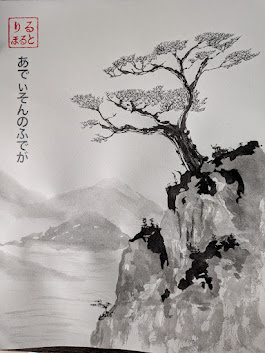
Original art · ink · brush · quiet places
Small worlds,
held in ink.
Original paintings and drawings by Addison Lilholt, inspired by quiet streets, forests, Japanese visual culture, and the everyday details worth looking at twice.

みずとすみ
water & ink
01 — 04
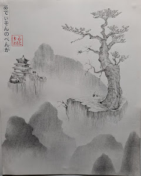
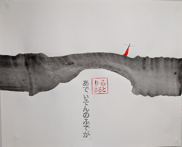
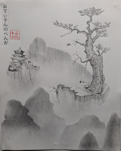
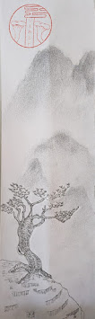
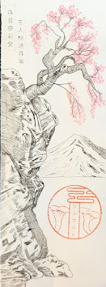

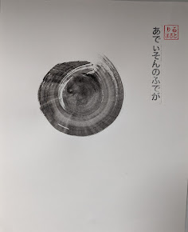
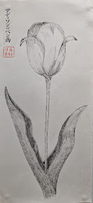
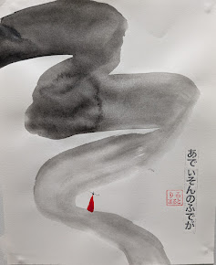
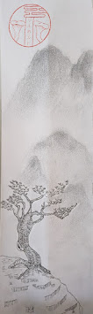
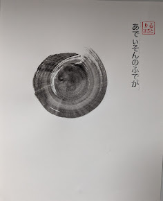
水
WORN
WORKS
The print shop
Art that
comes with you.
Selected studio works made for shirts and small everyday things. Printed to order through Printify.
Visit the print shop ↗About the studio
Water & Ink Studio is a place for slow-looking, quiet places, and artwork made by hand.
みずとすみ means “water and ink.” The work moves between loose brush painting, fine pen drawing, watercolor, and graphic interpretations of landscapes, storefronts, nature, and everyday objects.
Uneven ink, dry brush marks, imperfect lines, and open space are not accidents. They are where the work begins.
From the studio
New work, small observations, and notes from the sketchbook.
Receive studio notes ↗